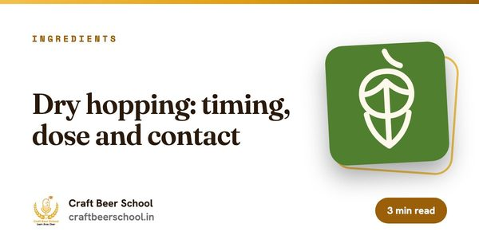
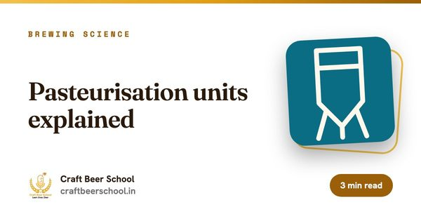

ढाँचाअनलाइन
अवधि2 हप्ता
सेसनहरू4 live, हरेक 2 घण्टाको
ब्याचबढीमा 20
शुल्क₹5,000
यो कसका लागि हो
के यो तपाईंका लागि हो?
- शून्य वा कम अल्कोहलको बियर थप्दै गरेका क्राफ्ट ब्रुअरीहरू
- non-alcoholic बियर ब्रान्डको योजना बनाउँदै गरेका संस्थापक
- धेरैजसो किन पातलो स्वादका हुन्छन् भन्ने बुझेर सुधार्न चाहने ब्रुअरहरू
अन्त्यसम्ममा
तपाईंले लिएर जाने कुराहरू।
- आफ्नो उपकरण र बजेट अनुसार अल्कोहलरहित बियरको सही बाटो रोज्नुहोस्
- साँच्चिकै body र aroma भएको, wort जस्तो स्वाद नआउने recipe बनाउनुहोस्
- Pasteurisation, pH र सरसफाइले सेल्फमा सुरक्षित राख्नुहोस्
- अल्कोहल सही नाप्नुहोस् र कुन नियम लागू हुन्छन् थाहा पाउनुहोस्
तपाईंको प्रशिक्षक र सम्पर्क व्यक्ति
यो कोर्स कसले पढाउँछ र कसलाई सोध्ने।

पाठ्यक्रम
हप्ता-हप्ता।
2 हप्ता। हरेक सप्ताहान्त दुई लाइभ सत्र र हप्तामा एउटा असाइनमेन्ट।
हप्ता 01. अल्कोहल बिना बियर बनाउने
- दुई बाटो: अल्कोहल बन्नै नदिने, वा पछि हटाउने
- सीमित fermentation, mash को उच्च तापक्रम र maltose ferment गर्न नसक्ने yeast
- Vacuum distillation र membrane: ठूला ब्रुअरीलाई किन सुहाउँछ
- Body र aroma: speciality malt, oats, late र dry hops, साथै carbonation
- धेरैजसो पहिलो प्रयासमा आउने wort जस्तो, गुलियो स्वाद सुधार्ने
असाइनमेन्ट: आफ्नो किटका लागि non-alcoholic recipe बनाउनुहोस्, जसमा लक्ष्य ABV र body तथा aroma को योजना होस्।
हप्ता 02. स्थिरता, परीक्षण र बिक्री
- जोगाउन अल्कोहल नहुँदा बियरलाई पाश्चराइजेसन, कम अक्सिजन र होसियार सरसफाइ चाहिन्छ
- यति कम तहमा अल्कोहल ठीकसँग नाप्ने
- बियरलाई अल्कोहलरहित भन्न मिल्ने ABV सीमा नियामकले तोक्छन् र यो बदलिएको छ, त्यसैले FSSAI का हालका नियम जाँच्नुहोस्
- कहाँ बेच्न सकिन्छ, कति मूल्य राख्ने र कसले किनिरहेको छ
असाइनमेन्ट: आफ्नो non-alcoholic बियरका लागि स्थिरता, परीक्षण र लन्च योजना लेख्नुहोस्।
यो कसरी चल्छ
ढाँचा र सर्तहरू।
- तालिका
- शनिबार र आइतबार live, दिउँसो 12:00 देखि 2:00 बजेसम्म IST। Cohort सँगको आपसी सहमतिमा समय सर्न सक्छ।
- Batch को आकार
- बढीमा 20 विद्यार्थी, त्यसैले हरेक प्रश्नको जवाफ पाइन्छ।
- समावेश
- सत्रका रेकर्डिङ, प्रस्तुति स्लाइड, साप्ताहिक असाइनमेन्ट र सिकाइ किट।
- प्रमाणपत्र
- सबै असाइनमेन्ट बुझाएपछि र कम्तीमा 80% लाइभ सत्रमा उपस्थित भएपछि Certificate of Completion।
- स्क्रिनभन्दा पर
- सिफारिस गरिएका माइक्रोब्रुअरी भ्रमण, ताकि तपाईंले पढिरहेका उपकरण आफ्नै आँखाले देख्नुहोस्।
- शुल्क
- साइन-अप गर्दा पूरै भुक्तानी। कुनै छुट लागू हुँदैन। पुष्टि भएपछि कोर्सको प्याकेज बदल्न मिल्दैन।
पूरै flight चाहनुहुन्छ? सबै 27 कोर्स जम्मा 71 हप्ताका हुन्छन्। भर्ना हुँदा तपाईं आफ्नो प्याकेज छान्नुहुन्छ। तिर्नुअघि सबै 27 कोर्स तुलना गर्नुहोस् र refund नीति पढ्नुहोस्।
पढ्दै जानुहोस्
सुरु गर्नुअघि पढ्नुहोस्

ब्रुइङका आधारभूत कुरा
Mash को तापक्रम र यसले तपाईंको बियरमा के गर्छ
धेरैजसो नयाँ ब्रुअरले कम आँक्ने recipe को सबैभन्दा ठूलो निर्णय mash को तापक्रम हो। mash को हरेक दायराले साँच्चै के गर्छ, यहाँ हेर्नुहोस्।

सामग्री
Dry hopping: समय, मात्रा र सम्पर्क
Dry hopping मा hop को धेरै बजेट खेर जान्छ। समय र मात्रा गलत भयो भने गिलासमा कहिल्यै नदेखिने सुगन्धका लागि पैसा तिर्नुहुन्छ।

ब्रुइङ विज्ञान
Pasteurisation units को व्याख्या
Pasteurisation unit आफैंमा तापक्रम वा समय मात्र होइन। यो दुवैको संयुक्त असर हो। सन्तुलन बिग्रियो भने बियर flat र बासी हुन्छ।
पढ्न सुझाइएका
यो कोर्सका सबै गाइडहरू।
यो कोर्सले समेट्ने विषयमा 14 निःशुल्क गाइड। पहिलो सत्रअघि जुनसुकै पढ्नुहोस्।
पेय व्यवसाय 4
परामर्श 3
ब्रुइङका आधारभूत कुरा 1
स्टाइलहरू 1
Brewing विज्ञान 1
उद्योग अपडेट 1
Non-Alcoholic Beer मा आफ्नो सिट सुरक्षित गर्नुहोस्।
हरेक समूहमा बढीमा 20 जना। अहिले नै भर्ना हुनुहोस् वा WhatsApp मा सोध्नुहोस्।